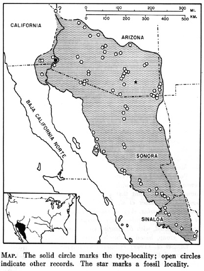
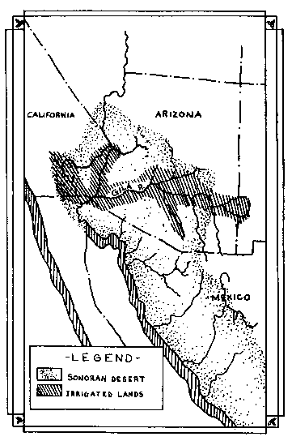
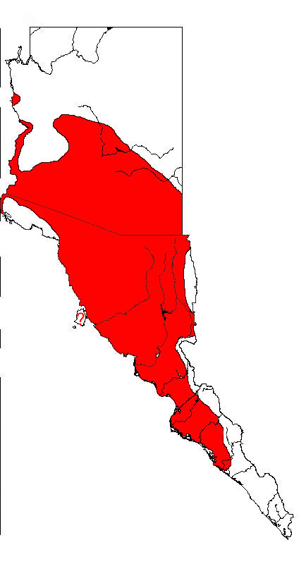

The Sonoran
Desert Toad
The Sonoran
Desert Toad
The Sonoran
Desert Toad
Bufo alvarius
You need a fishing license to take toads in Arizona. Visit the Arizona Department of Game and Fish to learn about it and see current regulations, or see the 2002 regulations in PDF format here. In Arizona, one may possess up to ten B. alvarius with a fishing license (or combination license.)
The New Mexico Department of Game and Fish lists the status of this toad as "threatened," however, there is no limit on the take for NM residents for personal use. But there is no commercial taking of B. alvarius for sale, barter, trade, or profit, and non-residents need a non-game license to take this toad for personal use.
The California Department of Fish and Game designates this toad as a "species of special concern" and none may be taken or possessed at any time. It is a misdemeanor to possess B. alvarius in California.
And Mexico... who knows?
See the latest conservation status of Bufo alvarius at NatureServe Explorer.
Arizona's monsoon - the unique weather pattern that heralds the arrival of these fine princes and
princesses.
To track this weather pattern see:
National Weather Service - Phoenix,
Arizona
or
National Weather
Service - Tuscon, Arizona
And then watch the Weather Channel on cable TV and a few good local weather Web
sites, like this one, and you will have a very good
idea when and where these toads will be plentiful.
Learn more about the monsoon here:
Basics of the Arizona Monsoon & Desert Meteorology - from ASU
Arizona Monsoon - from The National Weather Service
Tucson Monsoon Data - from The National Weather Service
The Distribution of Bufo alvarius:

Map from Fouquette, M.J., Jr. 1970. Bufo alvarius. Catalogue of American Amphibians and Reptiles, edited by William J. Riemer, American Society of Ichthyologists and Herpetologists, 93.1-93.4.
#####

#####
